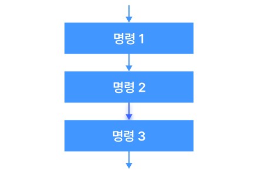
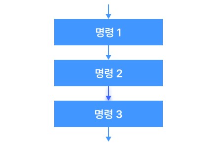

개념 학습
제어구조
제어 구조란 프로그램의 실행 흐름을 바꾸는 방법으로, 작업의 순서를 정하는 역할을 한다.
제어 구조에는 순차, 선택, 반복의 세 가지 구조가 있으며, 어떤 문제이든 이 세 가지 제어 구조를 조합하여 해결할 수 있다.
- 순차 구조
-
 
명령이 순서대로 실행되는 구조로, 프로그램 실행 과정의 가장 기본적인 구조이다.

명령이 순서대로 실행되는 구조로, 프로그램 실행 과정의 가장 기본적인 구조이다.
- 선택 구조
-
조건이 참인지 거짓인지에 따라 명령을 선택하여 실행하는 구조이다. 선택 구조에는 if문, if~else문, if~elif~else문 등이 있다.
- 반복 구조
-
 조건을 만족하는 동안 명령을 반복하여 실행하는 구조이다. 반복 구조에는 for문, while문 등이 있다.
조건을 만족하는 동안 명령을 반복하여 실행하는 구조이다. 반복 구조에는 for문, while문 등이 있다.